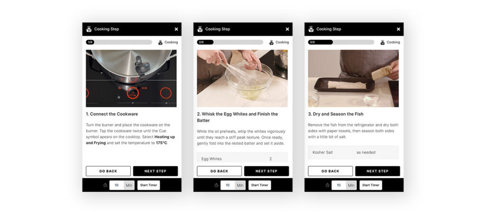

SMART COOKING HAS NEVER BEEN SO EASY TO GET TO GRIPS WITH.
The Celsius°Cooking™ system puts fine-tuned, technical control in the palm of your hand – literally. Now you have the power to change, define, and monitor the temperatures and timings of the food you cook with a new level of precision. And with the connected pan, hob, and probe, the enjoyably hands-on experience of working on the hob becomes a finely-tuned culinary adventure. Celsius°Cooking™ equipment links directly to the companion app from Hestan Cue that not only allows you to set, control, and monitor temperatures and timings but which is also home to a large collection of inspirational step-by-step recipes. Not only will this inspire you to make something delicious, but it’s also the best way to learn how to use the Celsius°Cooking™ system: by getting your hands on it and seeing what it can really do
Powered by ConnectLife™.
ConnectLife™ is an application with which you can unlock more features to your ASKO appliances. Use it to connect your hob to the Celsius Cooking accessories.


Temperature precise cooking.
Celsius°Cooking™ measures temperatures at the bottom of the connected pots and pans – both when frying, and when simmering delicate sauces that can easily catch or burn – and through a probe that can be put directly into the food. It is a sophisticated piece of technology that lets you measure your foods temperature very precisely
Guided Cooking
Recipes on the celsius cooking guided cooking website are specifically developed to make the most use of your celsius cooking equipment. Use your pot and probes and set exact temperatures to achieve results you thought were exclusive to high-end chefs. Sounds impressive? Just wait until you taste the dishes it helps you cook!
Recipes on the celsius cooking guided cooking website are specifically developed to make the most use of your celsius cooking equipment. Use your pot and probes and set exact temperatures to achieve results you thought were exclusive to high-end chefs. Sounds impressive? Just wait until you taste the dishes it helps you cook!

Premium induction
Celsius°Cooking™ measures temperatures at the bottom of the connected pots and pans – both when frying, and when simmering delicate sauces that can easily catch or burn – and through a probe that can be put directly into the food. The pot, pan and probe can monitor temperatures in the equipment and the food then communicate with the hob. What this means is that not only can you read the temperature of your food with accuracy, you can also control temperatures and timings to make sure it’s all perfect. And if that sounds impressive, just wait until you taste the dishes it helps you cook!

The hobs and accessories can be connected to eachother, meaning you can read temperatures read by the pot or probe directly on your hob.


Start Cooking!
